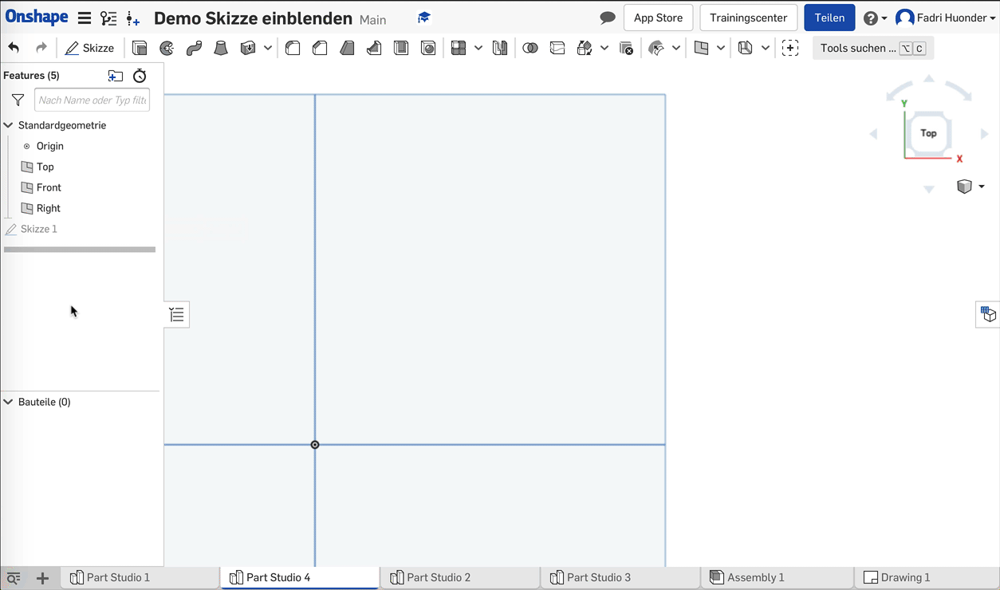

Eine Skizze ist im Arbeitsbereich nicht mehr sichtbar
Die Skizzenelemente einer Skizze (Linien etc.) werden im Arbeitsbereich nicht mehr angezeigt.
Gleichzeitig ist die Skizze aber noch in der Feature-Liste aufgeführt.
> Fehler:
Die Skizze wurde automatisch ausgeblendet.
Wahrscheinlich hast du gerade eben ein Feature auf Basis der verschwundenen Skizze erzeugt.
Nachdem eine Skizze in einem Feature referenziert worden ist, blendet Onshape die Skizze immer automatisch aus. Sie wird dann auch in der Feature-Liste nur noch grau angezeigt.
> Lösung:
Skizze wieder einblenden
Suche die Skizze in der Feature-Liste und fahre mit dem Mauszeiger darüber.
Dadurch erscheint rechts ein Symbol mit einem durchgestrichenen Auge: Klicke auf das Symbol!
